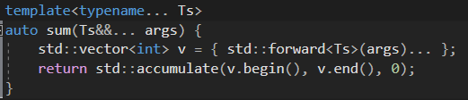

range是c++20新引入的库之一，虽然外部有更强的range-v3，我们只能等c++23了
引申一点，c++的管道运算符 “|”，可以将左值以参数形式传给右边
range就像一个容器
最重要的概念是view，即能看到range的范围,从而进行操作
举例：
| 的作用是让式子更易懂，不用在看连续的函数中的括号套括号，去抽丝剥茧
auto&& __range = a | ranges::views::reverse;
auto&& range1 = a | ranges::views::transform([](int x) { return x + 1; });
auto&& range2 = range1 | ranges::views::filter([](int x) { return x % 2; });
range+可变参数

std::forward:参数以原始的类型和引用类型转发给下一个函数，同时避免多余的拷贝或移动操作。
forward + template + &&
template